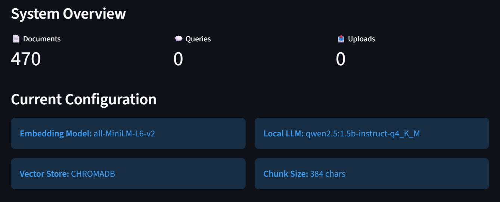
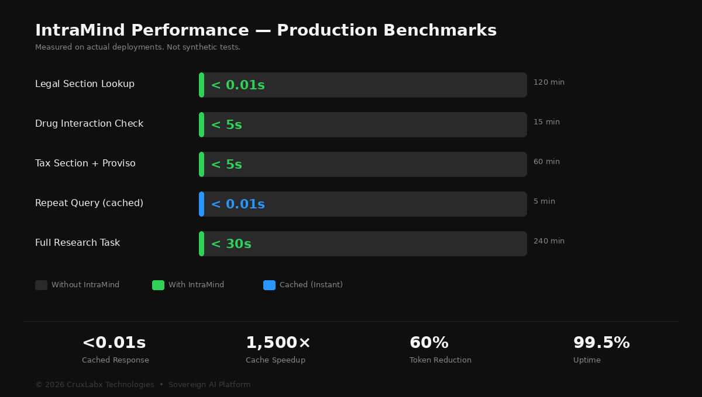

On-premise AI that searches your documents, answers in seconds, and keeps every byte inside your walls. No cloud. No internet. No compromise.
Every AI tool your team uses sends data to servers you don't control, in countries you can't audit, under terms you didn't negotiate.
Privileged case strategies typed into ChatGPT. Client matters processed on US servers. Attorney-client privilege — violated by default.
Drug interaction queries sent to cloud APIs. Clinical decisions based on generic web results. Patient safety hanging on someone else's uptime.
Tax computations on external servers. Client financials in transit. TDS rates from last year's SEO article. One wrong section — lakhs in penalties.
Student records, exam patterns, administrative decisions — processed through tools that phone home. Data sovereignty is not optional.
Not generic AI. Each edition is built for the specific language, regulations, and daily workflows of the institution it serves.
Instant section lookup across BNS, IPC, CrPC, BNSS, BSA. Supreme Court judgment search by ratio. Amendment tracking. Limitation period calculation. Cross-referencing across 50+ Acts.
Drug interaction checks with severity grading. Clinical guideline retrieval cited to page level. Treatment protocol lookup. NABH/ABDM compliance built in.
IT Act sections with provisos. 400+ GST circulars indexed. Audit standards to paragraph level. ROC deadlines. TDS rates. Budget amendment tracking.
Natural language catalog search. AI-powered book recommendations. Research assistance with cited answers from uploaded academic content. Deployed and operational.
Campus policy lookup. Administrative workflow assistance. Student and staff management guidance from institutional regulations.
Examination regulation lookup. Scheduling guidance. Result processing procedures from institutional SOPs.
No training. No prompt engineering. Just answers from your own documents.
Every IntraMind edition is built on the same battle-tested core platform. What changes per edition is the knowledge, the interface, and the guardrails.

Local AI model running on your hardware. No external API calls. No data in transit. Ever.
Proprietary context optimization that delivers faster, more precise answers with significantly less compute.
PDF, DOCX, scanned documents, images — everything gets ingested, processed, and made searchable.
Every document, every index entry, every cached response — encrypted with military-grade encryption.
Every query, answer, and user action logged with timestamps. Append-only. Tamper-proof.
AI stays in its lane. No hallucinated advice. No uncited answers. Reference-only with source attribution.
No synthetic benchmarks. Measured on actual deployments with real documents.

| Task | Without IntraMind | With IntraMind | Improvement |
|---|---|---|---|
| Legal section lookup | 30 – 120 minutes | < 3 seconds | 600 – 2,400× |
| Drug interaction check | 5 – 15 minutes | < 5 seconds | 60 – 180× |
| Tax section with proviso | 20 – 60 minutes | < 5 seconds | 240 – 720× |
| Repeat reference query | Same effort each time | < 0.01 seconds | Instant |
| Research from scratch | 2 – 4 hours | 30 seconds | 240 – 480× |
Every external network is hostile. Every cloud provider is a compliance risk. Every query contains sensitive information. We designed for that.
Server sits inside your building. No internet. No phone home. No telemetry. Air-gapped by design.
Documents, embeddings, cache — all encrypted at rest. Keys generated and stored on-site. Never transmitted.
Enforced at the engine level, not just the UI. Different roles. Different content. No exceptions.
Every query, every answer, every user action — append-only logs. Cannot be modified or deleted by any role.
Admin review and approval before any document enters the knowledge base. Rejections quarantined with reason.
No cloud, no SaaS AI, no auto-updates, no analytics beacons. Nothing leaves. Verified by architecture.
Direct engagement. On-site deployment. Complete handover. No app store. No SaaS. No subscription traps.
₹3 – 8L
One-time. Your server. You own it.
4 – 7 months
Discovery to full production. Training included.
No per-seat fees
No annual subscription. No usage billing. No cloud bills.
| Phase | What Happens | Timeline |
|---|---|---|
| Discovery | Requirements study. Content audit. Stakeholder interviews. | 1 – 2 weeks |
| Infrastructure | Server deployment on-site. Platform installation. | 1 – 2 weeks |
| Domain Build | Knowledge base creation. UI customization. Guardrails. Roles. | 8 – 12 weeks |
| Pilot | Controlled deployment. Real usage. Quality evaluation. | 4 weeks |
| Full Rollout | Institution-wide deployment. Staff training. Handover. | 2 – 4 weeks |
Upload documents. Ask questions. Get cited answers. That's it.
We don't share our model architecture. We don't list our internal tooling. We don't open-source our algorithms. That's intentional — the proprietary intelligence behind every query, every citation, every guardrail is what separates IntraMind from every open-source tutorial on the internet.
Proprietary context optimization. 40–60% compute reduction while improving answer precision. Algorithm details under NDA.
Structural understanding of Indian legal, medical, and financial knowledge hierarchies. Not prompt engineering — architectural intelligence.
Zero-dependency offline operation without performance trade-offs. Hard engineering constraints solved. Methodology proprietary.
Technical papers available under NDA for institutions in the evaluation phase.
research@cruxlabx.dev →
IntraMind is deployed through direct engagement. We work with institutions, not app stores.